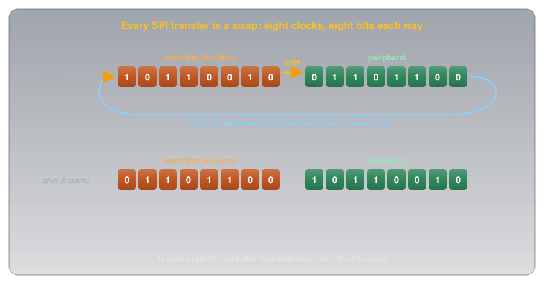
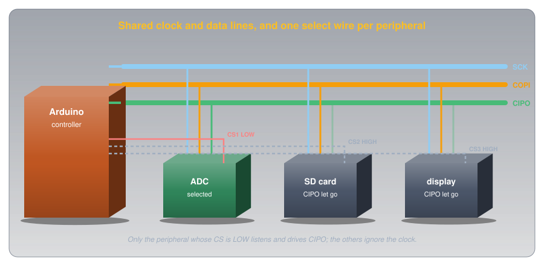
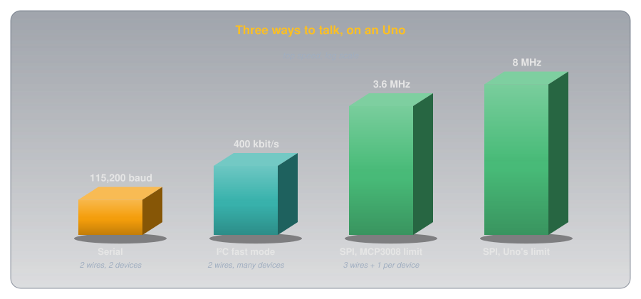
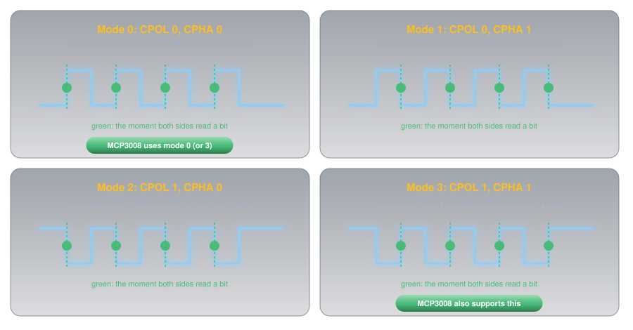
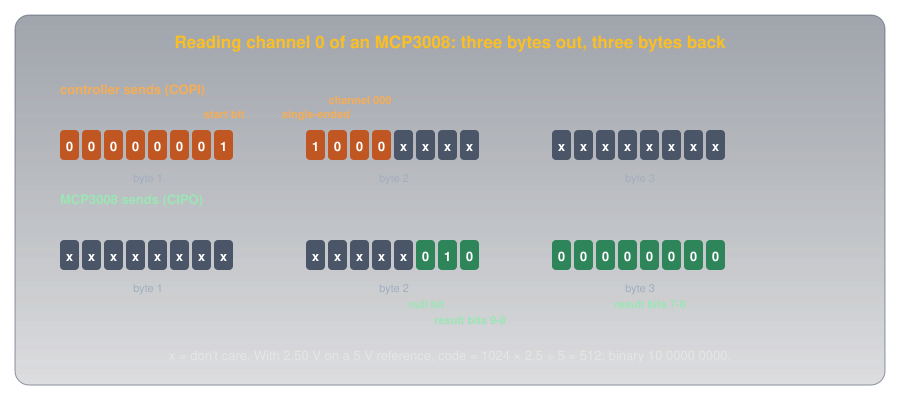

SPI🔗
Beginner
This article is in the Communication topic, after Serial Communication and I²C. It reads a voltage divider through an external analog-to-digital converter, so Reading an Analog Sensor is useful background. No other prior knowledge required.
An SD card, a colour display, and an analog-to-digital converter can all share three of an Arduino's pins, and the board can talk to them about twenty times faster than I²C allows. Yet the bus they share has no addresses, so no device is ever called by name, and no acknowledgements, so the Arduino never learns whether anyone heard it. Stranger still, to read a single byte from one of them, the Arduino has to send one.
That bus is SPI (serial peripheral interface), which Motorola built into its microcontrollers in the early 1980s (Serial Peripheral Interface on Wikipedia). Two ideas explain it:
- Every transfer is a swap. The controller and the device each hold a byte in a shift register, wired into a ring. Every clock pulse moves one bit each way at once, so after eight pulses the two have traded bytes.
- A wire per device replaces the address. Each device has its own chip select line. The controller pulls one LOW, and only that device takes part; the rest ignore the clock entirely.
The send-to-read puzzle comes straight out of idea one, worked through on a real converter in the second half.
Four Signals🔗
An SPI bus uses three shared wires plus one select wire per device, and a common ground:
- SCK (serial clock), driven by the controller, as in I²C.
- COPI (controller out, peripheral in): data from the controller to the device.
- CIPO (controller in, peripheral out): data from the device back to the controller.
- CS (chip select), one per device, active LOW: the device takes part only while its CS is LOW.
Older datasheets call COPI and CIPO MOSI and MISO, and CS SS (slave select); Arduino's SPI reference uses the newer names. On an Uno they're fixed pins: 13 (SCK), 11 (COPI), 12 (CIPO), and 10 as the usual CS, though any free digital pin can serve as a chip select.
Idea One: Every Transfer Is a Swap🔗
Inside the controller and inside each device sits an 8-bit shift register: a row of eight bit-cells that can all move one place along on a clock pulse. SPI wires the two registers into a ring. COPI carries bits out of the controller's register into the device's, and CIPO carries bits out of the device's register back into the controller's.

On every clock pulse, one bit leaves each register and enters the other. After eight pulses the controller holds the device's byte and the device holds the controller's. That's full duplex: data flows both ways at the same time, which Serial Communication managed only with two separate transmitters, and I²C never does.
The Puzzle, Solved🔗
The ring has no separate "receive" operation. The controller can only make bits move by pulsing the clock, and every pulse also shifts out one of its own bits. So reading a byte means sending one: if the controller has nothing to say, it sends zeros (or anything else the device will ignore) just to clock the answer back. Arduino's SPI.transfer() reflects this exactly: it takes the byte to send and returns the byte received (SPI reference).
Definition: Full Duplex
A link that carries data in both directions at the same moment. SPI is full duplex: every clock moves one bit out and one bit in. I²C is half duplex: its single data line carries one direction at a time.
Idea Two: A Wire Per Device🔗
I²C put an address at the start of every message. SPI uses wires instead: each device has its own chip-select line from the controller. Pulling a device's CS LOW tells it that the clock pulses that follow are for it.

The deselected devices do one more thing that matters: they let go of CIPO, leaving their output in a high-impedance state, neither HIGH nor LOW. Wikipedia's article is explicit that "non-selected slaves must use tristate output"; otherwise several devices would drive the shared CIPO line at once and fight, the very problem I²C's open-drain design avoided.
What the Wires Buy, and What They Cost🔗
Choosing by wire instead of by address has consequences in both directions:
- Speed. SPI's outputs drive actively both ways rather than waiting for a pull-up resistor to lift the line, so the clock can run far faster. The Uno's SPI hardware runs at up to half its 16 MHz clock, 8 MHz (ATmega328P datasheet), against I²C's 400 kbit/s.
- No acknowledgement. Nothing in SPI confirms that a device exists. Wikipedia puts it bluntly: the controller "could be transmitting to nowhere and not know it." A disconnected device just returns whatever level CIPO happens to sit at, so a reading of all 0s or all 1s is worth suspecting.
- Pins. Every device needs another chip-select pin, so a bus with many devices uses up a microcontroller's pins in a way I²C never does.

Clock Modes: One More Agreement🔗
With no address and no acknowledgement, the one thing both sides must agree on is when to read a bit. Two settings define it: clock polarity (CPOL), whether the clock rests LOW or HIGH, and clock phase (CPHA), whether bits are read on the first or second edge of each pulse. Together they give four modes:

Mode 0, clock resting LOW and bits read on each rising edge, is the most common. Getting the mode wrong is SPI's version of a wrong baud rate: the bits arrive, but get read at the wrong moments.
Hands-On: Reading an MCP3008🔗
The Uno's own analog inputs (Reading an Analog Sensor) cover six channels. The MCP3008 adds eight more over SPI: a 10-bit analog-to-digital converter (ADC) that runs from 2.7 V to 5.5 V and, according to Microchip's MCP3008 datasheet, supports SPI modes 0,0 and 1,1 (modes 0 and 3) with a clock of up to 3.6 MHz at 5 V. Here it reads a potentiometer, which is a voltage divider with a knob.

Three Bytes Each Way🔗
The datasheet describes the conversation bit by bit: with CS LOW, the first 1 the converter sees on its DIN pin is a start bit; the next bit chooses single-ended input; three more pick the channel. One clock later it sends back a null bit (0), then the 10-bit result, most significant bit first.
Counted from the start bit, that's 17 clocks, but an Uno's SPI hardware moves whole bytes. The datasheet's own solution is to pad the start with zeros, so the conversation fits three bytes exactly:

- Chip select starts HIGH: the converter isn't selected until a reading begins.
- 1 MHz, most significant bit first, mode 0: comfortably inside the converter's 3.6 MHz limit at 5 V.
- Selecting the converter. From here until CS goes HIGH, the clock pulses are its.
- Seven zeros and the start bit. What comes back is meaningless, so it's thrown away.
- Single-ended (the 0x80 bit) and the channel number in the next three bits. The two lowest bits that come back are the result's top two bits.
- A byte of zeros sent only to clock the last eight result bits back.
- Keep the bottom two bits of the second byte, shift them up, and add the third byte: a number from 0 to 1023.
Turning the potentiometer sweeps the reading from 0 to 1023. The datasheet's formula is the same shape as the Uno's own converter: the code is 1024 × Vin ÷ Vref, so with a 5 V reference, 2.5 V reads 512.
Choosing Between the Three🔗
With serial, I²C, and SPI all on an Uno, the choice usually makes itself:
| Serial (UART) | I²C | SPI | |
|---|---|---|---|
| Wires | 2 + ground | 2 + ground | 3 + 1 per device + ground |
| Picks a device by | (only two devices) | address | chip-select wire |
| Clock | none (agreed baud) | yes | yes |
| Direction | both at once, on two wires | one way at a time | both at once |
| Confirms receipt | no | ACK after each byte | no |
| Speed on an Uno | commonly 9600 to 115,200 baud | 100 or 400 kbit/s | up to 8 MHz |
| Typical devices | computer, GPS, Bluetooth modules | sensors, clocks, small displays | SD cards, colour displays, fast ADCs |
When a device only speaks one of them, the datasheet decides. When it speaks two, I²C saves pins and SPI saves time.
Safety and Good Practice🔗
SPI runs at logic levels, so, as with the other buses, the risks are to parts and to data.
Voltage Levels and Floating Selects
Many SPI devices, SD cards among them, are 3.3 V parts: a 5 V Uno's SCK, COPI, and CS outputs need level shifting before they reach one, and many SD card breakout boards include it. Keep every unused chip-select pin HIGH from the moment the sketch starts, as the setup() above does: a floating CS can select a device by accident, and two selected devices fight over CIPO.
Practice🔗
1. Read Without Sending?
A sketch tries to read one byte from an SPI device without sending anything. Why can't it, and what does it send instead?
Solution
Only clock pulses move bits, and every pulse also shifts a bit out of the controller's register. To get eight bits back it must send eight, usually a byte of zeros (or whatever the datasheet says the device ignores). SPI.transfer(0x00) does both at once and returns the received byte.
2. Who Answers?
Three devices share SCK, COPI, and CIPO. The controller pulls CS2 LOW and leaves CS1 and CS3 HIGH. Which device responds, and what must the other two do with their CIPO pins?
Solution
Device 2. Devices 1 and 3 must leave CIPO in high impedance (let go of it), so device 2 is the only one driving the shared line.
3. Count the Pins
How many Uno pins does SPI need for four devices? How many would I²C need?
Solution
SPI: 3 shared (SCK, COPI, CIPO) + 4 chip selects = 7 pins. I²C: 2 pins (SDA, SCL), as long as all four devices have different addresses.
4. Decode the MCP3008
The second byte returned is 0b10110001 and the third is 0b01100100. What's the 10-bit result, and what voltage is that with a 5 V reference?
Solution
Only the bottom two bits of the second byte count: 01. The result is 01 followed by 01100100: 256 + 100 = 356. The voltage is 356 × 5 ÷ 1024 ≈ 1.74 V.
5. All 1023s
An SPI sensor returns the maximum value on every read, even with its input at 0 V. Name two likely causes.
Solution
A disconnected or unpowered device (SPI has no acknowledgement, so the controller reads whatever CIPO floats or is pulled to, which can be all 1s), or the wrong clock mode or a swapped COPI/CIPO pair, so the bits are read at the wrong moments or not at all. Check wiring and the datasheet's mode first.
6. Which Bus?
For each, which bus would you choose: a colour display that redraws the whole screen many times a second; four temperature sensors read once a second; a link to a laptop for logging?
Solution
SPI for the display: it needs the speed. I²C for the sensors: two pins for all four, and once a second is no challenge. Serial for the laptop: it's what the USB connection already is.
Quick Recap🔗
-
Four signals
SCK, COPI (MOSI), CIPO (MISO), and an active-LOW CS per device. Uno: 13, 11, 12, and usually 10.
-
Every transfer is a swap
Two shift registers in a ring. One bit each way per clock: full duplex.
-
Send to read
Bits only move when the controller clocks them, so reading a byte means sending one.
-
A wire per device
Chip select picks the device. Deselected devices let go of CIPO.
-
Fast, but unconfirmed
Active drivers allow MHz clocks (8 MHz on an Uno). No ACK: a missing device goes unnoticed.
-
Clock modes
CPOL and CPHA give modes 0 to 3. Match the datasheet; mode 0 is most common.
-
MCP3008
Three bytes each way; the result is 1024 × Vin ÷ Vref.
-
Choosing a bus
I²C saves pins, SPI saves time, serial talks to the computer.
What's Next🔗
The MCP3008 sketch turns a knob into a number; Building a Threshold Ladder shows how to turn any reading into a row of LEDs, whichever bus it arrived on.
Further Reading🔗
Datasheets
- Microchip MCP3004/3008 Datasheet (PDF) — the start bit, the three-byte SPI exchange, modes 0,0 and 1,1, and the 3.6 MHz clock limit
- ATmega328P Datasheet (PDF) — the SPI chapter and its clock-rate settings
Official Documentation
- Arduino & Serial Peripheral Interface (SPI) — Arduino's guide to SPI, its pins, and the SPI library
Deep Dives
- Serial Peripheral Interface — Wikipedia — history, the shift-register ring, modes, and daisy-chaining
Related Articles
- Serial Communication — the clockless, two-device link
- I²C — addresses and acknowledgements on two shared wires
- Voltage Dividers — the potentiometer this article reads